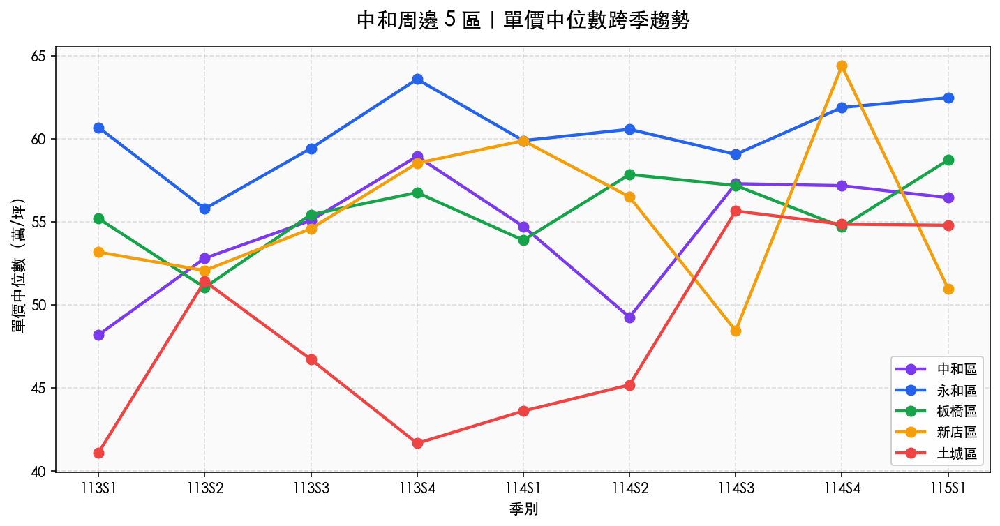

5 區當前快照（近 180 天 正常住宅）
中和區
54.4萬/坪
單價中位數
總價中位1,350 萬
建坪中位26.4 坪
近 6 月成交170 筆
2 年變化 ▲ 17.1%
永和區
58.4萬/坪
單價中位數
總價中位1,685 萬
建坪中位29.6 坪
近 6 月成交73 筆
2 年變化 ▲ 2.9%
板橋區
53.9萬/坪
單價中位數
總價中位1,515 萬
建坪中位29.9 坪
近 6 月成交188 筆
2 年變化 ▲ 6.4%
新店區
44.2萬/坪
單價中位數
總價中位1,365 萬
建坪中位32.9 坪
近 6 月成交149 筆
2 年變化 ▼ 4.1%
土城區
48.2萬/坪
單價中位數
總價中位1,435 萬
建坪中位30.7 坪
近 6 月成交89 筆
2 年變化 ▲ 33.3%
跨季趨勢
5 區單價中位數跨季變化（113Q1 → 115Q1）
每點為該季正常住宅單價中位數。樣本量過小的季別可能波動較大，建議搭配筆數判讀。

區別比較（近 180 天）
單價中位數
中位數抗極端值，比平均數更能代表「典型成交」。

單價分布（箱形圖）
盒子=中間 50% 區間；線=中位數；點=極端值。盒子愈高代表單價差異愈大。

交易量與結構
近 12 個月月成交量（5 區堆疊）
堆疊長條反映整體市場活躍度。內政部 open data 發布有 30–50 天延遲，最近 1~2 個月筆數會偏低。

5 區建物型態組成（近 180 天）
公寓比例高 = 老舊社區為主；大樓比例高 = 重劃區為主。對應地段與屋齡偏好。

原始資料下載
資料說明與免責
資料來源
- 內政部不動產交易實價查詢服務網（plvr.land.moi.gov.tw）開放資料。
- 每月 1、11、21 日由內政部公告，本站每週一自動同步。
- 因登錄與公告流程，資料較實際交易日延遲約 30–50 天。
「正常住宅」清洗規則
- 限 交易標的 = 房地（排除純車位、純土地）
- 限 主要用途含「住」字（排除商業用、工業用、其他用途）
- 排除備註含「親友、員工、共有人、特殊交易、瑕疵、急需處分、公益」之關係人交易
- 排除總價 < 100 萬、單價 < 5 萬/坪、單價 > 200 萬/坪 之極端值
免責聲明
- 本頁資料整理自政府公開資料，僅作為市場觀察參考，非投資建議。
- 實價登錄數字反映歷史成交，不代表未來市場走勢。
- 實際房屋估值、可貸金額、利率等，依個案不動產條件、財務狀況與市場情況而定；本公司為融資租賃業者，非金融機構，最終核貸由金融機構決定。